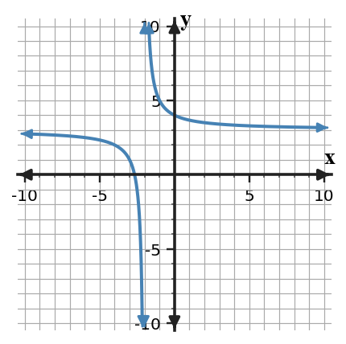
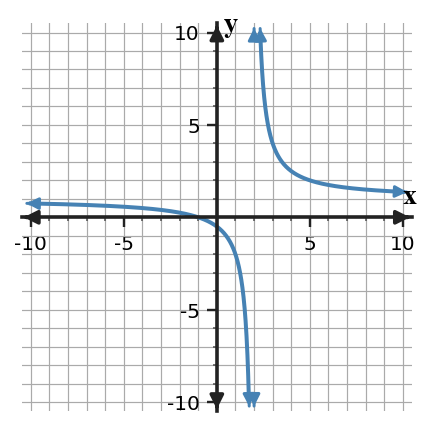

Mathematical idea: Infinite limits and limits at infinity describe asymptotic behavior; the Intermediate Value Theorem applies only when its continuity and between-value hypotheses are met.
You will interpret vertical and horizontal asymptotes with limit notation, distinguish end behavior from local blow-up, and decide when IVT guarantees a value.
Interpret infinite limits and limits at infinity to identify asymptotic behavior, and apply the Intermediate Value Theorem when its hypotheses are satisfied.
I can statements
These are words and notation you will see in this section. Do not define them yet.
Use the preview activity to decide which terms you already know, recognize, or do not know yet. Watch for these terms in bold when they are first meaningfully introduced or defined in the reading.
Directions
Before reading closely, skim the vocabulary list and the section. Look at titles, headings, bold terms, equations, pictures, graphs, tables, diagrams, and other representations. Do not try to understand everything yet. Notice what already looks familiar and make predictions about what the section may explain.
Step 1 - Sort the vocabulary. Write each term in the column that best matches what you know right now. You may move a term later.
| Know for sure | Recognize | Don't know yet |
|---|---|---|
Step 2 - Skim the section. Record what catches your attention before you read closely.
| What I noticed | |
|---|---|
| What I predict | |
| What I wonder |
Directions
This is a long-range preview for future work. Do not solve it today. Read and annotate it. Mark what you already understand, what looks familiar, and what you think you will need to learn before you can complete the task.
Consider the rational model $R(x)=2+\frac{3}{x-1}$ and a different function $Q$ that is continuous on $[0,5]$ with $Q(0)=-2$ and $Q(5)=6$.
Directions
Read in manageable chunks. Annotate the prose and the representations together: underline key relationships, circle or highlight new vocabulary, label important features, connect a sentence to an equation, table, graph, model, or diagram, and write brief questions or connections in the margins.
An infinite limit describes outputs that increase or decrease without bound as the input approaches a finite target. Statements such as $\lim_{x\to2^+}f(x)=\infty$ do not say that infinity is a function value; they describe unbounded growth.
A vertical asymptote is a vertical line $x=a$ associated with this unbounded local behavior. One side may approach $\infty$ while the other approaches $-\infty$, or both sides may head in the same infinite direction.

Graph read: Describe what the graph does near the vertical break and far to the left and right. Do not rely on crossing behavior to identify the horizontal asymptote.
Because the behavior can differ by side, one-sided notation is often essential near a vertical asymptote. A two-sided statement involving infinity is sometimes used when both sides share the same unbounded direction, but directional statements are more informative when signs differ.
Rational functions often have vertical asymptotes where a denominator approaches 0 while the numerator stays nonzero. This is a structural clue, but algebraic simplification must come first: a canceled factor creates a removable hole rather than a vertical asymptote.
On a graph, trace the curve toward the suspected x-value and watch the magnitude of the outputs. The line itself is not part of the graph of the function; it is a geometric description of nearby behavior.
Asymptote language therefore belongs to limits, not to substitution. Saying “the function equals infinity at $x=2$” is incorrect because infinity is not an ordinary real output.
Vertical behavior uses a finite target input, often one-sided:
$$\lim_{x\to a^+}f(x)=\infty.$$Horizontal end behavior uses an unbounded input:
$$\lim_{x\to\infty}f(x)=L.$$Stop and Discuss
Use the graph to connect asymptotes with limit statements.

For $g(x)=2+\frac{4}{x+1}$, connect the formula to asymptotic behavior.
A limit at infinity asks what happens to outputs as the input increases or decreases without bound. For example, $\lim_{x\to\infty}f(x)=3$ means the graph approaches the horizontal level 3 far to the right.
A horizontal asymptote $y=L$ is associated with a finite limit at $\infty$ or $-\infty$. Unlike a vertical asymptote, it describes end behavior rather than what happens near one finite input.
For a function such as $f(x)=L+\frac{k}{x-a}$, the fraction becomes small in magnitude when $|x|$ is large, so the output approaches $L$. This makes the horizontal asymptote visible directly from the formula.
A horizontal asymptote is not a barrier. A graph may cross the line one or more times at finite inputs and still approach it in the long run. The asymptote describes what the graph does eventually, not every point along the way.
Context gives limits at infinity practical meaning. If a model $M(t)$ approaches 120 as time grows, then 120 is a long-run level predicted by the model. The model may begin above or below that level and may even cross it before settling.
Keep local and end behavior separate: vertical asymptotes use $x\to a$, while horizontal asymptotes use $x\to\pm\infty$.
$x=a$: outputs become unbounded near a finite input.
$y=L$: outputs approach a finite level as $x$ grows without bound.
Interpret infinite limits and limits at infinity for two rational functions.
Analyze the asymptotic behavior of $q(x)=4-\frac{3}{x+2}$.
The Intermediate Value Theorem turns continuity into an existence guarantee. If a function is continuous on a closed interval $[a,b]$, then it takes every output value between $f(a)$ and $f(b)$ somewhere on that interval.
There are two hypotheses to check before using the theorem in the form we need here. First, continuity must hold on the entire interval. Second, the target output $N$ must lie between the endpoint outputs $f(a)$ and $f(b)$.
If those conditions are satisfied, IVT guarantees at least one point $c$ with $f(c)=N$. The theorem does not tell you the exact value of $c$, and it does not guarantee that there is only one such point.
Continuity is essential. Endpoint outputs on opposite sides of a target value are not enough if the graph contains a jump or hole that could skip over the target. This is why a sign change by itself does not justify a root unless continuity is known.
The target must also actually be between the endpoint values. A continuous function with endpoint outputs 5 and 9 gives IVT guarantees for values between 5 and 9, but not for 2.
Be careful with endpoints when the question asks for a point in the open interval $(a,b)$. If the target value is already known only at an endpoint, IVT does not automatically guarantee a second occurrence inside the interval.
The theorem is a logical statement: hypotheses lead to a conclusion. Strong AP-style reasoning names the continuity condition, states that the target lies between the endpoint outputs, and then gives the existence conclusion.
If $f$ is continuous on $[a,b]$ and $N$ lies between $f(a)$ and $f(b)$, then there is at least one $c\in[a,b]$ such that $f(c)=N$.
If the task requires $c\in(a,b)$, check that the target value is not guaranteed only at an endpoint.
Stop and Discuss
Decide whether the Intermediate Value Theorem (IVT) guarantees the requested value.
Apply IVT conditions to three scenarios.
IVT gives an existence conclusion. It does not locate the point, prove uniqueness, or apply when continuity on the interval is missing.
Evaluate common claims about asymptotes and IVT.
Use asymptotic and theorem language precisely.
You have now seen these terms in the reading, representations, and practice. Use this table to consolidate what each term means in this course.
| Term / notation | Definition / meaning |
|---|---|
| infinite limit | a limit statement describing function values that increase or decrease without bound as the input approaches a finite target |
| vertical asymptote | a vertical line $x=a$ associated with unbounded function behavior as $x$ approaches $a$ from at least one side |
| limit at infinity | a statement describing the value a function approaches as the input increases or decreases without bound |
| horizontal asymptote | a horizontal line $y=L$ associated with a finite end-behavior limit as $x\to\infty$ or $x\to-\infty$ |
| Intermediate Value Theorem | if a function is continuous on $[a,b]$, then it takes every value between $f(a)$ and $f(b)$ somewhere on that interval |
| Mistake | Why it is tempting | Check instead |
|---|---|---|
| Treating a vertical asymptote as a function value. | Point values are familiar from earlier algebra. | Check the limit conditions separately from the assigned value. |
| Assuming a horizontal asymptote cannot be crossed. | Vertical asymptotes behave like barriers, so students may overgeneralize. | Remember horizontal asymptotes describe end behavior and may be crossed. |
| Using IVT without verifying continuity on the required interval. | A familiar theorem name can trigger automatic use. | List the required hypotheses and verify each one. |
| Writing $f(a)=\infty$ at a vertical asymptote. | The graph grows without bound near the line. | Use an infinite-limit statement; infinity is not a real function value. |
| Using IVT from endpoint values alone. | A target between endpoint outputs looks sufficient. | Verify continuity on the entire closed interval first. |